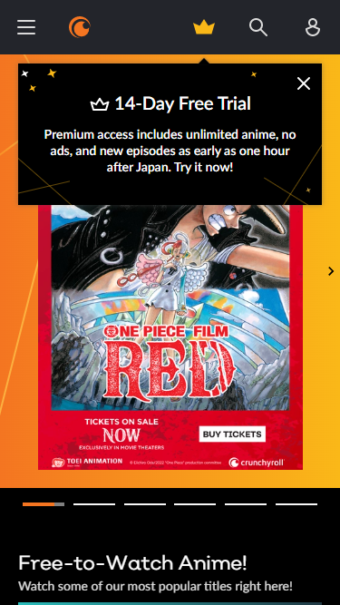
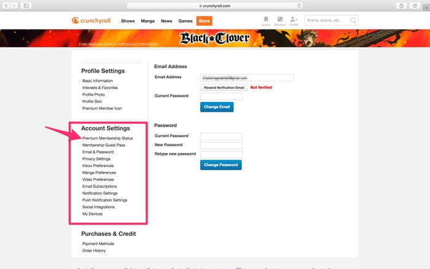

如何節省 Crunchyroll 會員費用

日本擁有獨特的動漫文化，而其他國家則更青睞真人出演的電影和電視劇。但動漫文化不僅在日本流行，而且越來越多的人被它所吸引。於是，Crunchyroll 應運而生。
我們將在本文中向你展示我們所知道的有關 Crunchyroll 的所有資訊。
Crunchyroll 是什麼？
你可能沒有想到的是，Crunchyroll 是一家美國(而非日本)的訂閱視頻點播 OTT 流媒體服務公司，由一群伯克利畢業生於 2006 年創立。
2020年，Crunchyroll被索尼收購，最終成為一家日本公司。
Crunchyroll 擁有 300 萬用戶，服務範圍覆蓋 200 多個國家和地區，已成為全球最受歡迎的動漫品牌之一。
在 Crunchyroll 上觀看什麼？
Crunchyroll 聲稱目前擁有 1000 部作品和 30000 集動漫內容。不僅包括《火影忍者》、《龍珠》和《海賊王》等知名動漫，還可以觀看《咒術回戰 0》和《間諜家族》等近期熱門作品。
甚至還有一家 Crunchyroll Studio，製作《Noblesse》和《Tower of God》等原創動漫。
他們還提供各種現場活動，包括 Crunchyroll Expo 和 Crunchyroll Anime Awards。
Crunchyroll 有配音嗎？
是的，但 Crunchyroll 上只有部分節目有配音。你可以通過在篩選器中選擇"配音"標籤來找到這些動畫。
Crunchyroll 多少錢？
Crunchyroll 有 3 個不同級別的會員， FAN 、 MEGA FAN 和 ULTIMATE FAN 。
各款產品的價格如下：
- FAN：每月 7.99 美元。 此會員級別無法 下載節目，且 每次 只能在一台設備上觀看。
- MAGA FAN：每月 9.99 美元。 此會員級別可下載節目以供離線觀看，並可同時在 4台 設備 上觀看。
- 終極粉絲：每月 14.99 美元。 這是最高級別的會員。不僅 可以下載 視頻，還可以同時在 6 台設備 上觀看。

如何免費獲得 Crunchyroll？
幸運的是， Crunchyroll 提供 14 天免費試用。
註冊帳戶並在表格中填寫你的付款詳情後，你將可以訪問所有動漫。
你可能需要設置提醒，在試用結束前取消會員資格，否則你將自動成為付費"粉絲"。
如何取消 Crunchyroll？
你可以在帳戶頁面取消免費試用或會員資格。

點擊 "取消會員資格" 後，將彈出一個窗口，要求你確認取消。點擊 "確定" 。
如何節省 Crunchyroll 訂閱費用？
成為 Crunchyroll 的"粉絲"可能對你來說太貴了。別難過! 環球巴士 登場的時候到了!
在環球巴士，你可以與他人分攤訂閱費用，以節省自己的錢。這樣，Crunchyroll 的價格僅為 每月 15.74 元!（年付 188.88 元）， 還有一個更節省的選擇，環球巴士自研的"爆米花"技術，整合了多個平台資源，訂閱費用更是超低，僅需 49.94/年！